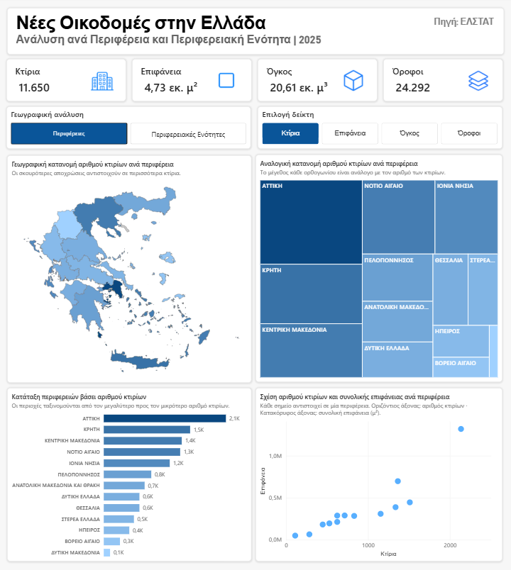
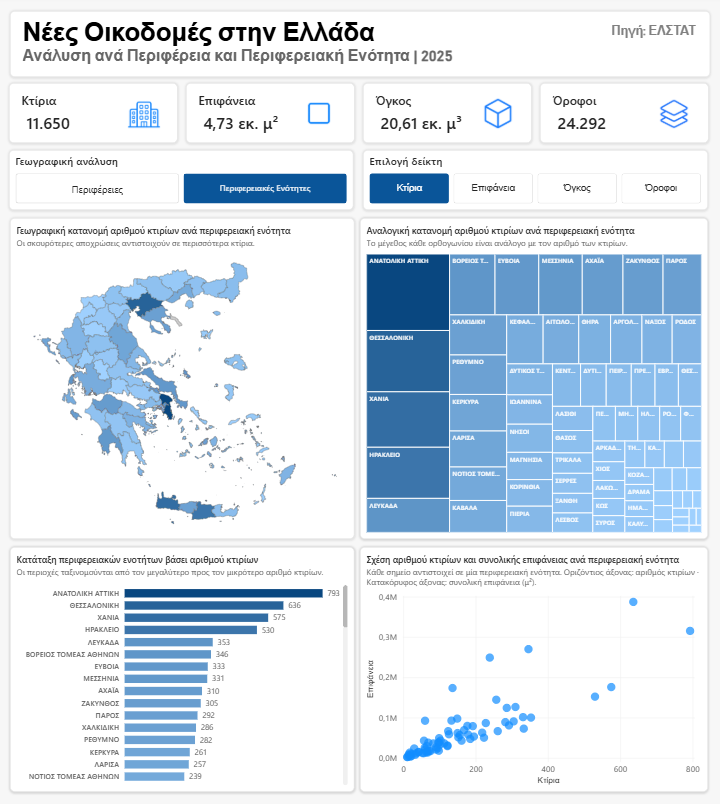
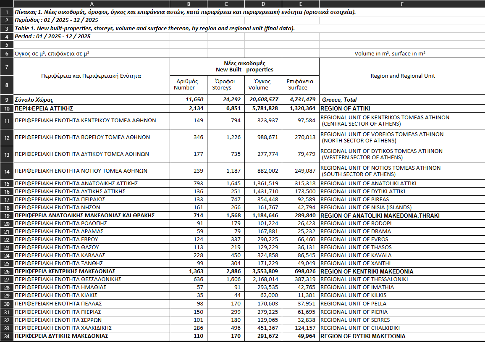
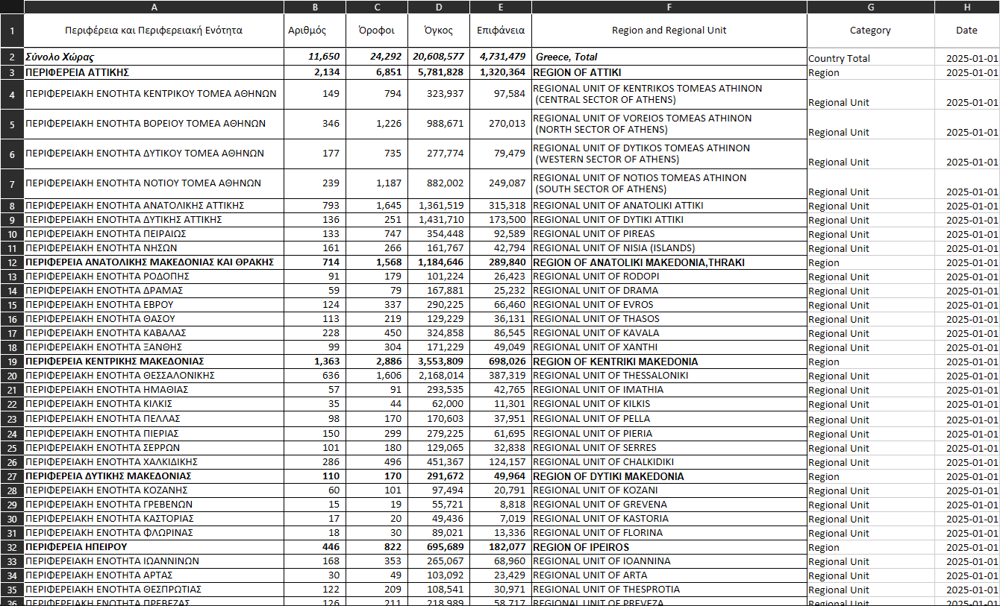

Public data · Dashboard development · Data analysis
Construction
activity in Greece
An interactive Power BI dashboard for comparing new building activity across Greek regions and regional units using cleaned ELSTAT data.

01 / The question
Where was new building activity concentrated?
ELSTAT's construction statistics can be difficult to compare across administrative areas when source tables are not shaped for analysis. This report brings several measures together so regional patterns are easier to explore.
02 / The dataset
Four measures, two geographic levels.
The analysis uses ELSTAT data on new building activity from January to December 2025. It compares building counts, storeys, total building volume and total surface area at both the regional and regional unit levels.
Open the ELSTAT website03 / The workflow
Prepare once, compare consistently.
- 01Clean and structure
Excel transforms ELSTAT source tables into a consistent dataset for reporting.
- 02Model the measures
Power BI organizes indicators and geography so totals are compared at the appropriate level.
- 03Design the report
DAX measures, dynamic labels and interactive selectors support focused comparisons.
- 04Map the regions
Custom TopoJSON supports a shape map alongside charts and ranked tables.
04 / The visuals
Regional views and the data behind them.



05 / Findings & recommendations
Attica led the regional totals.
Attica accounted for 18.3% of new buildings and 27.9% of total surface area nationwide. Among regional units, East Attica led in building count and storeys, while Thessaloniki led in surface area and volume.
Recommended interpretation
These are absolute totals, not population adjusted rates. Use totals to understand scale, and add a relevant denominator before comparing construction intensity between areas. A multi year series would help check whether the 2025 pattern continues.